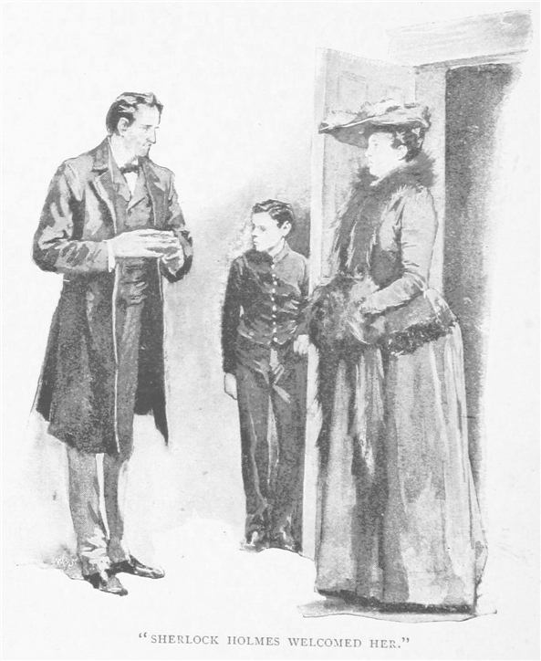
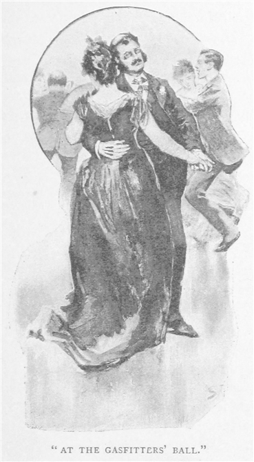
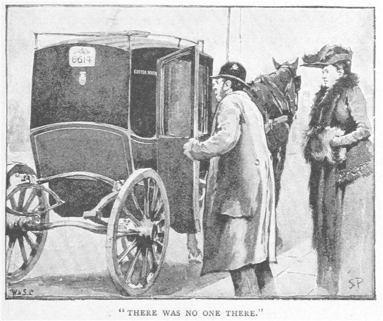
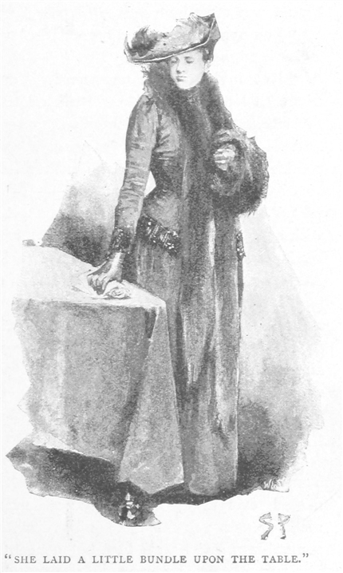
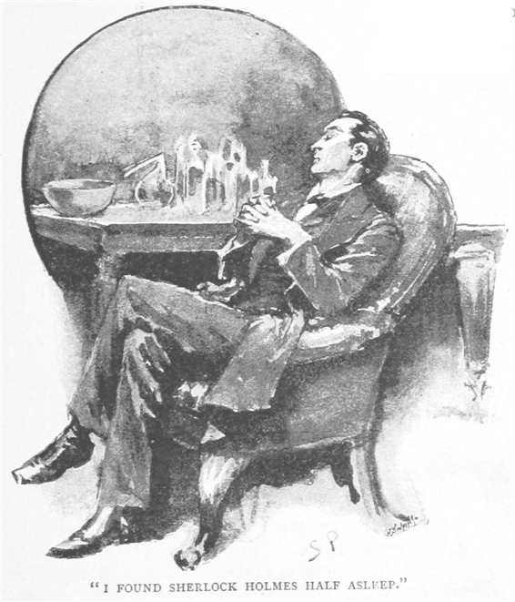
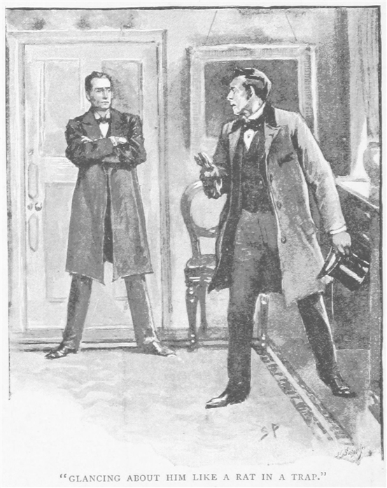
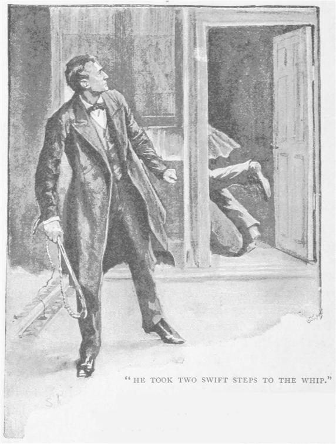

「いいかね。」とシャーロック・ホームズは、ベイカー街の下宿でふたり暖炉を囲み、向き合っているときに言い出した。「現実とは、人の頭の生み出す何物よりも、限りなく奇妙なものなのだ。我々は、ありようが実に普通極まりないものを、真面目に取り合おうとはしない。しかしその者たちが手を繋いで窓から飛び立ち、この大都会を旋回して、そっと屋根を外し、なかを覗いてみれば、起こっているのは奇怪なること――そう、妙に同時多発する事象、謀りごとにせめぎ合い、数々の出来事が不思議にもつながり合って、時を越えてうごめき、途轍もない決着を見せるとなれば、いかなる作り話も月並みなもので、見え透いた結びがあるだけの在り来たりの無益なものとなろう。」
「そうはいっても納得しかねるね。」と私は答える。「新聞紙上で明るみに出る事実なんて、大抵が実にそっけなく実に卑しい。モノを見てもだ、警察の調書などでは写実主義が限界まで貫かれているにもかかわらず、出来上がるものにはまったくのところ、魅力もなければ芸もない。」
「それなりの取捨選択を用いねば真実味は生み出し得ない。」とはホームズの御説だ。「これが警察の調書には欠けている。ことによると細部よりも治安判事の戯れ言に重点を置く。細部にこそ、観察に値する事件全体の核心が含まれている。信じていい、普通なるものほど不自然なことはない。」
私は笑みを漏らし首を振って、「君がそう考えるのもわからないではないよ。そら君の立場としては、三大陸じゅうにいる考えあぐねた人々、その皆の私的相談屋・お助け屋であるわけだから、奇妙奇天烈なあらゆることに関わり合う羽目にもなる。しかしまあ、」――と床から朝刊を取り上げて――「ここらで実地に試してみよう。とりあえず目に付いた見出しはこうだ。『妻に対する夫の虐待』、段の半分にわたる記事だが読まんでもわかる。まったくよくある話に決まってる。ほら、他に女が居て、酒に喧嘩、薬に生傷、世話焼きな妹か女家主。いくらヘボ文士でも、これほどヘボなものは書けんよ。」
「ふむ、この例は君の説に不適切だ。」とホームズは新聞を取り上げ、目を落としながら言う。「これはダンダス夫妻の別居訴訟と言って、あいにく僕もこの件の謎解きに少しばかり噛んでいる。この夫はまったく酒を飲まず、他に女もいない。訴えられた行状というのが、食事の終わるたび入れ歯を外して妻に投げつける、そんなふうにずるずるとなっていったというものだ。わかるだろう、これは凡百の語り部の想像に浮かびそうな行為ではない。嗅煙草でもやりたまえ、博士、そして自分の引いた例でやりこめられたと認めることだ。」
と差し出された古金色の嗅煙草入れ、蓋の中央には大粒の紫水晶、その見事さが友人の質素な暮らしぶりとあまりに対照的であったため、口を挟まずにはいられなかった。
ホームズは、「ああ、忘れていた、君は数週間ぶりだったか。これはボヘミア王からのささやかな記念品だ。あのアイリーン・アドラーの書類の件に力添えした礼に。」
「ならその指環は？」と私が、その指に巧みなブリリアントカットの宝石があるのに目を付けて訊ねると、
「これはオランダの現王家からだ。手がけた一件については微妙なものだから君にも打ち明けられない。僕の些細な案件をひとつふたつ記録してくれるくらいは構わないのだが。」
「なら今は何か手がけてないのか？」と私が前のめりに聞くと、
「一〇ほど、いや一二か。だが少しも惹かれそうなところがない。面白くはなくとも無論大切ではある。ところが実際のところ、経験上、大抵取るに足らないところにあるのだよ、観察力と鋭い因果分析力の発揮できる場というものは。大犯罪ほど単純化する傾向があるが、それは犯罪の規模が大きくなれば、原則として動機が見えやすくなるからだ。手元の案件のうちでは、ひとつだけやや込み入った事件の問い合わせが、マルセイユからあるのだが、それ以外は惹かれるものが何もない。だがほんの数分もすれば、もっと良いモノが手に入る見込みがある。あそこだ、あれはうちの依頼人になる。でなければ僕は大馬鹿者だ。」
ホームズは椅子から身を起こし、窓掛けの合わせ目のあいだに立つ。見下ろす先には、くすんだ中間色のロンドン市街、私もホームズの肩越しに覗いてみると、向かいの舗道に大柄の女が、ふっくらした毛皮の襟巻きを首に廻して、
「今のような素振りは以前にもあった。」とホームズは紙巻き煙草を暖炉にくべる。「舗道でそわそわするのは、色恋沙汰と決まっている。助言を欲しているのだが、事が微妙のあまり人に言ったものかと心を決めかねている。とはいえここにいても見て取れることはある。たとえば女が男から心底ひどい目に遭わされたのならためらいなどしようもなく、その場合は大抵、呼び鈴の紐を引きちぎって見せる。ここで取れる解釈とは、色恋沙汰ではあるが、その乙女は怒るというより戸惑っているないし悲嘆に暮れている。だがここに本人も来たから、この悩みもすぐに解けよう。」

という間に部屋の扉が叩かれ、給仕服の少年が入ってきてメアリ・サザランド嬢と告げるや、女性本人の姿が黒づくめの少年の後ろからぬっと現れる。あたかも水先案内の小舟についてくる満帆の商船のごとくだ。シャーロック・ホームズは彼らしく快く迎え、そして扉を閉め、丁重に肘掛け椅子を勧めながらも、さっと女をながめ回す。
「その近眼でタイプ打ちを相当になさると、少々おつらいでしょうに。」
「はい、初めのほどは。」と女は答える。「しかし今では見ないでも文字の位置はわかりますので。」とそのときふと、相手の言葉の意味するところがわかったのか、女は驚いて顔を上げる。その大きく愛嬌のある顔は、面食らいつつもいぶかしげであった。「ホームズ先生、わたくしのことをすでにご存じで？」と声を張り上げ、「でなければいったいどうやって……」
「お気になさらず。」とホームズは笑いながら、「物事を知っているのが僕の仕事、他人の見落とすところがわかるよう心掛けている、といったところで。でなければ、どうしてあなたがこちらへご相談へお越しに。」
「は、はい、こちらへ参りましたのは、先生のことをエサリッジの奥さまよりうかがいまして。あの方のご主人をやすやすとお見つけとか。警察も亡くなられたものとしていらしたのに。ええ、ホームズ先生、なにとぞわたくしにもお力添えを。裕福ではありませんが実入りも年に百ドルありますし、それにタイプ打ちも少しの足しには。これをみな先生に差し上げます、ホズマ・エインジェルの行方がわかるのなら。」
「お越しの際、どうしてあれほどお急ぎに？」と訊ねながら、ホームズは指先を突き合わせ、目を天井に。
またもや驚きの表情が、メアリ・サザランド嬢のいくぶん変化の乏しい顔に現れる。「そうですの、わたくし、うちを飛び出してきました。ほんとに腹が立って、あんなにのんきにして、ウィンディバンクさん――あっ、わたくしの父で――まったくもう、警察には行きたくない、こちらへもうかがいたくない、それで結局何もしないのに、何も事件なんて起こってないのだから、ってばかり言って。それでわたくし、気が気でなくなって。取るものもとりあえず、まっすぐこちらへ。」
「お父上、」とホームズ。「義理の、ですね。名前が違います。」
「ええ、義父ですの。父と言うのもおかしいくらいで、わたくしと五年と二ヶ月年上なだけなんですの。」
「お母上はご壮健で？」
「ええ、もう元気で丈夫で。でも心から喜んで、とも言えない事情がありまして、ホームズ先生、その母が父の死後すぐ再婚しまして。それも本人より一五も年若い男とだなんて。父はトテナム・コート通りの配管業で、そのあと結構な店が残ったのですが、母は現場頭のハーディさんと続けておりました。ところがウィンディバンクさんがやってくると、その店を母に売らせてしまって。自分はものすごい、ワインの外商をしているとかで。店は暖簾と上がりで四七〇〇ポンドになりましたが、父が生きていたらこんなはした額で売るなんてけっして。」
私の予想では、シャーロック・ホームズはこの締まりのないこんがらがった話にいらだっているはずだったのだが、反対にできるだけ気を集中させて聞いているのだった。
「ご自身のささやかな収入とは、その店が元で？」
「いいえ先生、まったく別物で、オークランドにいる伯父のネッドが遺産でわたくしにと。ニュージーランドの株で、配当が四分五厘、額面は二五〇〇ポンドなのですが、わたくしは利回りにしか手を付けられません。」
「極めて興味深いお方だ。」とホームズ。「では、年百ほどの大金が入り、加えてご自身の稼ぎもあるなら、少しばかりご旅行や色々と余裕もおありのことでしょう。独り身の女性ならきっと六〇ポンドほどの収入でかなり結構やっていけますから。」
「わたくしなら、もっと少なくっても。先生、ですがうちにいるとはいえ
「現在のお立場はよくわかりました。」とホームズ。「こちらは友人のワトソン博士、彼の前では僕同様、気兼ねなくお話を。さて次のご質問ですが、できればそのホズマ・エインジェルさんとあなたとのご関係を。」
紅いものがさっとサザランド嬢の顔によぎり、上着の裾を気遣わしげにつまんで、「出会いはガス工組合の舞踏会の折でした。」と話し出す。「組合は父が存命中よく招待状を送ってくださいまして、その後も忘れずに母とわたくしへと。けれどもウィンディバンクさんはわたくしどもが行くのを承知せず、それどころか外出すらよく思っていなかったのです。たとえば日曜学校学校の催しなどに行きたがろうものなら、もう気も狂わんばかりで、ですがわたくし、今度ばかりは行く、ぜひ行くって。別にあの人に留め立てする権利はございません。知り合う値打ちのない奴らばかりだと言いますが、父のご友人の方々もいるはずなんですから。お前には着る服もないだろうと言われましたので、今まで箪笥にしまい込んでいた紫のフラシ天を出してやりましたわ。とうとう何も言うことがなくなって、あの人も所用でフランスへ出払ったものですから、母とわたくしと、現場頭でしたハーディさんとで参りました。そこでホズマ・エインジェルさんに会いましたの。」

するとホームズは、「では、そのウィンディバンクさんがフランスから帰ってくると、あなたが舞踏会へ出たので大いにご不満だったでしょう。」
「いいえ、それがずいぶん嬉しそうで。確か笑って肩をそびやかして。女ってやつはダメだと言ってもしようのない、思うようにやってしまうのだから、って言いましたの。」
「なるほど。そのときガス組合の舞踏会でお会いになった紳士の名は、ホズマ・エインジェルで間違いありませんね。」
「ええ、先生。その夜に出会って、次の日には、無事でお帰りですかと、うちを訪ねておいでで。そのあとも会いまして――つまりホームズ先生、二度散歩をご一緒しまして、そのあと父が戻ってきまして、ホズマ・エインジェルさんは以後うちには来られなくなりました。」
「一度も？」
「そうですの、ほら父はこんなこと大嫌いでございますから、できることなら客を入れたくないという主義で、口癖のように、女というものは自分の家庭の輪にいるのが幸せだと。とは言いましても、母にも申し上げましたが、女はそもそも自分の輪が欲しいものなのに、わたくしには自分のものがないんですもの。」
「それはそうと、ホズマ・エインジェルさんの方は？ あなたに会おうとしなかったので？」
「それは、父が一週間ほどして、またフランスへ出向く予定でしたので、それでホズマは手紙で、あの人が行ってしまうまではお互いにあわない方が無難だと。そのあいだもわたくしどもは手紙は書けましたので、あの方も毎日書いてくださいました。手紙を受けとるのは朝でしたので、父は知る由もありません。」
「その紳士とのご婚約はその頃に？」
「ええそうですの、先生。ふたりでした初めての散歩のときに婚約を。ホズマ――エインジェルさん――は、レドンホール街の事務所で出納係をしていらして――それで――」
「業種は？」
「それが困ったことに、先生、存じ上げなくて。」
「では自宅は？」
「そこに住み込みで。」
「ならご住所はご存じかと。」
「いえそれが――レドンホール街とだけ。」
「では手紙の宛名をどこに。」
「レドンホール街郵便局へ、
「実に思わせぶりで。」とホームズ。「長年、座右の銘としているのですが、細事の大事は限りなし。他にどんなささやかなことでも、ホズマ・エインジェルさんで覚えていることがありましたら。」
「あの方は大変な恥ずかしがり屋なの、ホームズ先生。わたくしと散歩するのも日のあるうちより暮れてからがいいみたいで、人目に付くのが嫌だと言うんです。ほんとに内気で紳士らしい方、声だって細くて、若いときに扁桃炎で腺が腫れ上がったらしくて、そのせいで喉が弱くなったとか。だから話し方がためらいがちでささやくみたいで。身だしなみはいつもよくて、とてもきちんとして派手でなく、さっぱりとして、でもわたくしと同じで目がよくなくて、まぶしいからと色眼鏡を。」
「ふむ、それで義父のウィンディバンクさんがフランスから帰ってからはどうなりました？」
「いえその、エインジェルさんがうちにいらっしゃって、父がフランスから帰る前に式を挙げてしまおうとご提案に。恐ろしいほど熱心でわたくしの手に聖書を持たせて、何があっても自分を信じてくれと誓わされて。母もあの人に誓うのがいいに決まってると、それだけ想いがあるのだと言いますし。母は初めからまったくあの方びいきで、わたくしよりもあの方を愛していたくらいでした。しかも今週じゅうに式を挙げるとおっしゃるので、わたくしは父のことが気になり始めていたのですが、ふたりが父のことを気にしなくてもいい、あの人にはあとで言えばいい、母が父のことを何とかすると言うのです。そのようなこと、わたくしはとても嫌でしたの、ホームズ先生。わたくしより少し年上なだけですから許しを得るというのも妙なことなのですが、とにかくこそこそと何かを致したくはありません。そこでボルドーの父へ手紙を。そこに会社のフランス事務所があるのです。ですが、手紙は式当日の朝に手元へ戻って参りまして。」
「ということは届かず。」
「そうですの。あの人は着く直前にイングランドへ発ちまして。」
「ほう！ それはおあいにく。では式の予定は金曜日、場所は教会で？」
「そうですの。でもごくつつましやかに。キングス・クロス近くの

「どうやらひどい辱めをお受けになったようですね。」とホームズが言うと、
「違いましてよ！ あの方は立派でお優しい方、わたくしをそんな捨てたりなど。それに朝のあいだずっと、何があっても自分を信じてくれとおっしゃり続けておりました。たとえ何か予期せぬことで離ればなれになったとしても、わたくしはあの方を信じると誓ったことをけして忘れは致しませんし、あの方も遅かれ早かれお誓いになるはずでした。式の朝にしては妙な会話のようですが、そのあと起こったことでそういう意味でしたのとわかりまして。」
「きっとその通りでしょう。ではあなたのご意見では、何か予期せぬ災難にその方が見舞われたと？」
「そうですの。きっとあの方は何か危険を察知していたのですわ。でなければあんなことおっしゃいません。ですから予期したことが起こったのだと思いますの。」
「ですが、その起こったと思われることについては、心当たりがないと。」
「ございません。」
「もうひとつ、その件をお母上はどうお捉えに？」
「かんかんです。この件については金輪際口にするなと。」
「お父上は？ お話しには？」
「もちろん。そしてわたくしと同じく、何かあったと考えたようで、いずれホズマから連絡があると。あの人が言うように、わたくしを教会の戸口へ連れてって置き去りにしても、誰が何の得をしましょう。まあ、あの方がわたくしからお金を借りているとか、結婚したらあの方がお金の分け前にあずかれるとかならいざ知らず、ホズマは自分の財産もかなり持っておりますし、わたくしのお金を気にしたことすらないのですから。それにしても何が起こったのでしょう。どうして便りひとつも。ああ、それを考えるだけでわたくし、おかしくなってしまいそうで、夜一睡もできませんの。」と女はマフのあいだから小さなハンカチを出して、そのなかへぼろぼろと涙をこぼし始めた。
「あなたの事件、ひとつ手がけてみましょう。」とホームズは立ち上がり、「はっきりとした結論をお渡しできると信じています。さあ事件の重荷はみな僕に預けてしまって、このことで心を悩ませるのはこれ以上やめることです。何よりもまず、ホズマ・エインジェルの想い出は消してしまうこと、あなたの目の前から彼がそうしたように。」
「では、もう二度とあの方に会えないとお考えに？」
「おそらくは。」
「ではあの方に何が起こったのでしょう？」
「その疑問を僕の手に委ねるのです。彼の正確な人相書と自筆の手紙などあれば嬉しいのですが、できましたらいただけたら。」
「前の土曜のクロニクルに尋ね人の広告を。こちらがそのゲラ刷り、そしてこちらが受け取った手紙四通です。」
「どうも。ではあなたのご住所を。」
「キャンバウェル、ライアン
「エインジェルさんの住所はわからない、と。お父上の仕事場の方は。」
「ウェストハウス＆マーバンクの外商ですから、フェンチャーチ街でいちばん大きなクラレット輸入業者になります。」
「どうも。お話たいへんよくわかりました。書類はこちらへ置いてください。それから僕の助言を忘れないように。この出来事はみんな謎のままにしておいて、あなたの人生から追い出してしまうことです。」
「お優しいのですね、ホームズ先生。けれどわたくしできませんの。いつまでもホズマを信じております。いつ戻ってきてもいいように。」
ばかげた帽子やのっぺらした顔に似合わず、ある種の気品がこの依頼人の一心に信じる気持にはあり、敬意を感じずにはいられなかった。女は卓上に手紙をまとめて置いて出て行く。呼ばれたらいつでもまた来ますと約束をして。

シャーロック・ホームズは数分間何も言わずに座っていた。指先を合わせたまま、両足を前に投げ出し、瞳がまっすぐに天井へ向けられている。やがて網棚からなじみの
「実に興味深い研究対象だ、あのおぼこ。」との所見。「あんなささいな問題よりあの女の方が面白い。まあそれにしてもひどく月並みなものだ。僕の索引に当たれば、同一の事件が見つかるよ。七七年のアンドーヴァ、それに同種のものが昨年ハーグで。しかしたとえ古くさくとも、僕にとって新しいことが細かくひとつふたつはあるものなのだが、しかしあのおぼこ当人からは得るところがある。」
「君はあの女のことを相当読み取れたようだが、私にはさっぱり見えんね。」と私が漏らすと、
「見えないのではなく、見落としているのだ。目の付けどころがわからない。だからこそ大事な点にことごとく気づいていない。わからせるのは無理なのだろうが、袖は重要であり、親指の爪は暗に語る。また靴ひもから導かれるのは大問題。さてあの女の見た目から君はどうまとめる？ 説明したまえ。」
「うむ、あの女が身につけていたのは、黒板色で鍔広の麦わら帽子、赤煉瓦色の羽根付き。上着は黒で、黒のビーズがいくつも縫いつけられていて、小粒の黒玉の飾りが裾のふさ縁に。衣服は茶褐色、コーヒーよりもやや濃く、首元と袖には少し紫色のフラシ天が。手袋は鼠色で右の親指がすり切れている。靴は見ていない。小振りの丸い金の耳飾りをぶら下げていて、全体としては相当裕福そうだが、実際はのんきでおっとりした町娘だ。」
シャーロック・ホームズはそっと手を叩いてほくそ笑む。「これはこれは。ワトソン、驚くほど上達している。まったく実にうまくやったものだ。なるほど要点はことごとく見落としているが、方法は当たっている。色に目ざとい。全体の印象に囚われず、そう、細部に注目したまえ。僕が真っ先に見やるのは、常に女の袖だ。男ならまずは穿いているものの膝とするのがいいだろう。君も見た通り、この女の袖口にはフラシ織があった。これは跡がつきやすい、極めてありがたい生地だ。手首の少し上の二重線はタイピストが机に押し当てる場所にあたり、まさにくっきりと付いている。手動のミシンでも同じ跡が付くが、左腕だけ、しかも親指の反対側に付く。その代わりタイプでは右の広範囲にわたる。それからあの女の顔を見ると、鼻の両側に鼻眼鏡の跡がわかったから、あえて近眼とタイプ打ちのことに触れて、相手を驚かせたという次第だ。」
「驚いたのは私もだよ。」
「しかしあれはまだわかりやすい。そのあと僕は見下ろして相当驚き、興味を持ったのだが、女の履いていた靴、互いに似ていないでもないが、実は別々のもので、一方にはつま先の革にわずかな飾りがあって、もう一方にはなかった。それに一方は五つのうち下の二つの釦しか留められておらず、もう一方は一つ目、三つ目、五つ目。ここでわかるのは、ある若い女性が身なりはきっちりしているのに、別々の靴をしかも釦を半分しか留めずに自宅からやってきたということだから、急いでお越しにと言っても大した演繹でもない。」
「そのほかは？」と訊ねる私は、友人の鋭敏な推理にいつものように興味をかき立てられていた。
「ではついでに気づいたことだが、あの娘は、着がえを完全に済ませてから家を出るまでのあいだに、何かを書き留めている。君も女の右手袋の指先がすり切れているのを認めているが、どうやら手袋にも指にもすみれ色のインクがついていたのはわからなかったようだ。書き急いだためにペン先を深く浸しすぎたのだ。今朝のことに違いない、でなければ指に跡がくっきり残らない。このことだけでも面白いが、かなりの初歩といったところか。ところで仕事に戻らねば、ワトソン。済まないが読み上げてくれないか、ホズマ・エインジェル氏の尋ね人広告とやらを。」
私は小さなゲラ刷りを灯りにかざしてみた。「十四日朝失踪、ホズマ・エインジェルなる紳士。身長五フィート七インチ、体格よし、顔色悪し、黒髪、頭頂に小禿あり、たわわな黒い頬髯口髭、色眼鏡、話し方はやや訥々、失踪時の服装は黒のフロックコート、黒のベスト、金のアルバート鎖、下はハリスツイードの鼠色、ゴム布の長靴に茶褐色のゲートルを重ねる。過去レドンホール街の事務所に勤務。情報提供者には――」
「結構。」とホームズ。「手紙の方は……」と言いながら目を通していたが、「ごく普通のものだ。エインジェル氏の手がかりはここにまったくない。ただバルザックからの引用があるくらいだ。しかしひとつ際だった点もあって、それには君も面食らうだろう。」
「みなタイプ打ちだ。」と私が言うと、
「あろうことか、署名までタイプ打ちだ。下に『ホズマ・エインジェル』と小さく器用に打ってあるだろう。ほら日付もあるが、差出人の住所にはレドンホール街とあるだけで、かなり曖昧だ。署名のこの点はかなり含むところがある――事実上の決め手とも言える。」
「何のだね？」
「やれやれ、このことが事件にどれだけ大きなものか、君にだってわかるだろう？」
「何と言ってよいやら、これは誓約不履行の訴えを起こされたときに、署名を否認したい、ということなのか？」
「いや、そこは論点ではない。とにかく二通手紙を書こう。そうすれば事は片づく。一つは
私はこの友人の鋭い推理力と並はずれた行動力をこれまでのことから信頼しきっているので、今回の事件に関しても、その解明を依頼された奇妙な謎の扱い方が自信ありげで気楽なものであるからには、何か確固とした証拠がすでにあるのだろうと感じていた。確かに彼でも失敗に終わることがあると、間近で思い知らされたこともあった。ボヘミア王とアイリーン・アドラーの写真の一件であるが、『四人の誓い』の不思議な依頼や『緋のエチュード』にまつわる異常な展開を思い出すにつけ、わが友人に解きほぐせぬものとは、それこそ奇妙にもつれたものであると思えてならない。
そのあと私は退室したが、そのときもまだ黒い陶製のパイプを吹かしていた。あくる晩、私がまた来たときにはきっと自分は手がかりをみな手中にしているぞ、そして失踪したメアリ・サザランド嬢の花婿の正体へと迫るのだ、と言いたげなふうであった。
その頃、私がひとりの重篤な患者の治療に専念していたこともあって、翌日はずっと病床に付きっきりであった。六時頃になってようやく身体が空いたので、何とかハンソム馬車に乗り込んで、ベイカー街へ駆けつけるなか、あの小事件の解決の手伝いには間に合わぬやも、と半ばそわそわしていた。しかし着いてみればホームズはひとりうとうとして、その痩身長躯を肘掛椅子の奥へと畳み込んでいる。おびただしく並べられた瓶に試験管、そして塩酸のきつい刺激臭が物語るのは、彼が一日じゅうご執心の化学実験をやっていたということだ。

「どうだね、解けたかね。」と私が入るなり訊ねると、
「うむ、酸化バリウムの重硫酸塩だ。」
「違う違う、事件の謎だよ！」と私が叫ぶと、
「ふむ、あれか！ 今取り組み中の
「ほう、そいつは誰だね、サザランド嬢を捨てた真意と言うのは？」
私が疑問を口から出すが早いか、そしてホームズが返答しようと唇を開ききらないうちに、廊下から重い足音、そして扉を叩く音が聞こえてくる。
「あの娘の義父、ジェイムズ・ウィンディバンクだ。」とホームズ。「六時には行くと返事を寄越した。お入りを！」
入ってきた男は体格のいい中背の人間で、年は三〇前後、髯はきれいに剃られているが顔色は悪く、物腰は穏やかでへりくだるようでいて、灰色の瞳は驚くほど鋭くとげとげしい。私たちをそれぞれ疑わしげにちらちらと見やってから、すり切れた山高帽を横棚に置き、軽く会釈をして手近の椅子ににじり寄って座る。
「こんばんは、ジェイムズ・ウィンディバンクさん。」とホームズ。「このタイプ打ちの手紙はあなたからのものですね、これによると、六時にご面会の約束をと。」
「そうです。少し遅れはしまいかと心配しましたが、どうも多忙で身体が自由になりませんもので。サザランドさんが些細なことで煩わせまして申し訳ありません。人前で内輪の恥をさらすことなどしない方がまったく賢明ですからな。娘がここに来ることはまったく私の意に反することなのですが、あの通りカッとなったらすぐ動いてしまう
「それどころか、」とホームズの静かな声。「ホズマ・エインジェル氏はうまく見つかるとしか思えない状況なのです。」
ウィンディバンク氏はぎくりとして、手袋を取り落とした。「喜ばしい話ですな。」
「不思議なことに、」とホームズが切り出す。「タイプライターも人間の筆跡同様、個々によってまったく異なるものなのです。新品でない限り、ふたつとまったく同一のものはありません。ある文字が他より摩滅していたり、片側だけ摩滅したり。さてこのあなたの短信に打たれた文字ですが、ウィンディバンクさん、毎回この『ｅ』の上がどこかやや不鮮明で、なおかつ『ｒ』の尻尾がわずかに欠けています。他にも一四の特徴がありますが、この二つが他よりわかりやすい。」
「手前どもは職場がこの器械ひとつですべての通信をやっておりますので、きっとそれで少し摩滅しているのかと。」と客は答え、その小さな目を光らせて、ホームズを鋭く見やる。
「時に、あなたに実にまさしく興味深い研究というものをお見せしましょう、ウィンディバンクさん。」とホームズは続ける。「僕はこのところ、別のささやかな論文を書こうと考えてまして、それはタイプライターとその犯罪との関係についてです。今ちょっと関心を注いでいる題材なのです。ここにあるのが、失踪した男から来たとされる四通の手紙。みなタイプ打ちされている。いずれもｅが摩滅しｒの尻尾が欠けているだけでなく、拡大鏡をお使いになればおわかりになりますが、先ほど触れました他の一四の特徴も同様にあるのです。」
ウィンディバンク氏は椅子から跳び上がり、帽子をつかんで、「そんなおとぎ話で無駄にする時間はありません、ホームズさん。」と言い、「その男を捕まえられるのなら、捕まえたらいいでしょう。やってのけてから知らせてください。」
「確かに。」とホームズは歩いていって、扉に鍵を掛ける。「ではお知らせします。その男を捕まえました！」

「何！ どこだ！」とウィンディバンク氏は叫び、唇を真っ青にして、罠にかかった鼠のように身の回りを見まわしている。
「ええ無駄です――無駄なのですよ。」と穏やかなホームズ。「もう逃げられません、ウィンディバンクさん。すべてお見通しなのです。挨拶としてはよくありません、こんな単純な問題を僕に解けないと言うなんて。よろしい！ 座りたまえ。この件について話し合いましょう。」
客人は椅子に崩れ落ち、死んだような顔をする。額には冷や汗が光っており、「う――訴え出ることなどできんぞ。」と小声で言う。
「そのことは僕としても実に残念です。しかしここだけの話、ウィンディバンクさん、これほど残酷で身勝手で心のない、ちゃちなごまかしに出会ったのは初めてです。さて、事の次第を一通り語らせてもらいましょう。間違っていたら反論するといい。」
男は椅子の上に縮み込んで、頭を胸に沈めたため、まるで押しつぶされた人間のようであった。ホームズは両足を炉棚の隅に乗せて、両手を懐に入れて反り返り、他に対して言うというよりむしろ独り言でもしているような調子で話し始める。
「その男は自分よりかなり年上の女と金目当てで結婚した。娘と一緒に住んでいる限り、娘の金が使い放題。彼らの地位の人間からすれば相当の額だ。それを失えば深刻な変化が生じよう。その保全に一苦労してみる価値はある。娘の性格はお人好しもいいところだが、なかなか情と思いやりのある人物だ。だから性格がいい、ささやかな実入りもあるとくれば、独り身もそう長く続くはずもない。さて彼女の結婚は、むろん年百の損失を意味する。そこで義父はその阻止のために何をする？ やることははっきりしている。女を家から出さず、同年代の人間との交際を禁じればよい。しかしすぐに気づく、いつまでもうまくはいかない。女はたてつくようになり、自分の権利を主張し、そしてついにある舞踏会へぜひとも行きたいと言い出す。狡猾な義父はそこでどう出たか？ 思いついた案は、心でなく頭から出たものだった。妻に見て見ぬふりをさせ、助けを得て、男は変装する。鋭い目には色眼鏡をかぶせ、顔は濃い口髭頬髯で覆い、その通る声もわからぬようささやき声に。しかも乙女は近眼だから二重に安全。男はホズマ・エインジェルとして現れ、自分を愛させることで他の恋人候補を追い払う。」
「初めはほんの冗談だったんです。」と客は声を絞り出す。「心を奪おうなどとは夢にも。」
「白々しい。どうであれ、その若い女性は迷いのないほど心奪われ、しかも義父はフランスとすっかり思い込んでいるから、自分が騙されているといった疑いを微塵も差し挟まない。女はその紳士の心づくしの振る舞いに舞い上がってしまい、その効果は母の声高な賞賛の言葉でいや増す。それからエインジェル氏は通い始め、逢瀬を重ねる。行けるところまで推し進めた方がいいことが明らかだったからだ、真の効果を生み出したいのなら。婚約、ここまで来ればとうとう安心。乙女の愛情は他の誰へ向くこともない。しかしいつまでも騙し続けるわけにもいかない。フランスへ行った振りをするのも若干厄介だ。やるべきことは明白、劇的な形でこの件の幕を下ろすこと、そうすればこのことは、若い女性の心に永遠に刻みつけられ、当分のあいだは他に求婚者が現れても見向きもしないだろう。だからこそ聖書で操の誓いを立てさせ、だからこそまた式の当日の朝に何かが起こるやもとほのめかす。ジェイムズ・ウィンディバンクの欲することは、サザランド嬢がホズマ・エインジェルに縛られること、そしてその生死が不明であるだけに、ともかくこの先一〇年は他の男に耳を貸さなくなること。教会の入り口まで女を運び、それから自分は先へ進まぬよう都合良く消え去る。四輪の一方の戸から入りそのまま反対から出る。古くさいごまかしだ。これが事の次第でしょう、ウィンディバンクさん！」
ホームズが話しているあいだに、客はいくばくかの度胸が戻ってきたのか、ここで椅子から立ち上がり、その青い顔に冷笑を浮かべながら、「そうかもしれないし、そうでないかもしれないでしょう、ホームズさん。」と言い放つ。「しかしそれほど頭が切れるのなら、ご存じのはずだ、今法を破ろうとしているのはご自分であって私じゃあない。私のしたことは初めから訴えられる要素がないけれど、あなたがその扉を閉めている限り、常にあなたは暴行の脅迫と不法拘束で訴えられるおそれがある。」
「君の言う通り、法は君を扱えない。」とホームズは鍵を外して扉を開け放つ。「しかしここにいる男ほど、罪に値するものはない。もしその若い女性に兄弟親友があれば、貴様を鞭で肩から打ち払ったに違いない、間違いなく！」と話ながら男の顔を見ると、痛烈にあざ笑っていたので血が上ったのか、「依頼者との仕事には含まれてはいないが、ここに手頃な狩猟鞭がある、ちょっとこれを試してみても――」と友人がたちまち二歩鞭へ近寄ったが、つかみ取る前に階段からどたばたという足音が聞こえ、玄関の扉の大きな音がして、窓から見るとジェイムズ・ウィンディバンク氏は全速力で道を走り抜けていた。

「冷血な悪党が！」とホームズは言い捨て、笑いながら自分の椅子に再び身体を預ける。「あのような奴は、罪に罪を重ねて最後には極悪なことをしでかし、果ては絞首台だ。今回の事件、少なくともいくつかの点ではそれなりに興味深かった。」
「まだ私は、君の推理の筋道がみなわかったわけではないのだが。」と私は白状する。
「ふむ、無論初めから明らかだったのは、そのホズマ・エインジェル氏に、おかしな振る舞いをするほど深い動機があったに違いないということだ。同様にはっきりしているのは、この出来事で実際に得をするのが、我々の知りうる限り、義父しかいないということだ。それからこの二人の男がけして一緒にはおらず、ひとりが姿を現しているときはいつももう一方がいないという事実が、曰くありげである。それに加えて色眼鏡と妙な声が、どちらも変装を思わせる。濃い髯も同様だ。僕の疑問は、その署名がタイプ打ちされていることでいよいよ濃くなる。無論それが示すのは、当人の筆跡が女にとって身近なため、少しでも見せると気づかれてしまうから。君もこの個々の事実がわかれば、細かい点も含めてどの点も同じ方向にあることがわかるだろう。」
「して、その証明はいかに？」
「例の男に目星を付けたら証拠はわけない。この男の働いていた会社はわかっている。印刷された人相書をもって、変装部分をすべて取り除く――髯、眼鏡、声、そして会社に送る。お宅の外商でこの人相書に一致する者がいるかご確認を。すでにタイプライターの癖には気づいていたから、職場の住所宛でこの男本人に手紙を送って、ここに来られるかと訊ねた。期待通り返事はタイプ打ちで、細かいが特徴的な痛みが一致するとわかった。同じ郵便でフェンチャーチ街のウェストハウス＆マーバンクから手紙が届き、その知らせの内容は、人相書があらゆる点でうちの社員のジェイムズ・ウィンディバンクと一致。以上！」
「で、サザランド嬢は？」
「僕が言ったところで彼女は信じまい。覚えているか、古いペルシアのことわざを。『虎児を捕らうるもの危険あり、